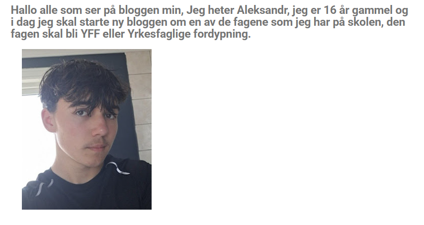
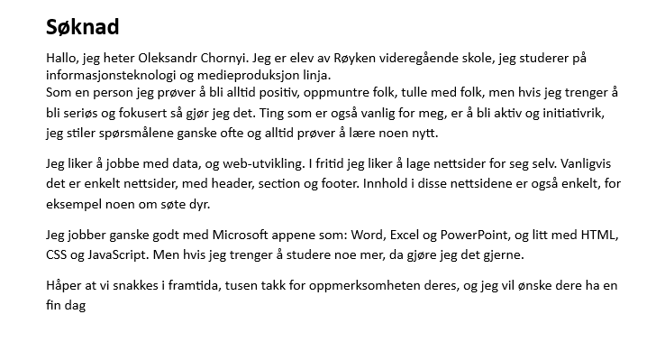
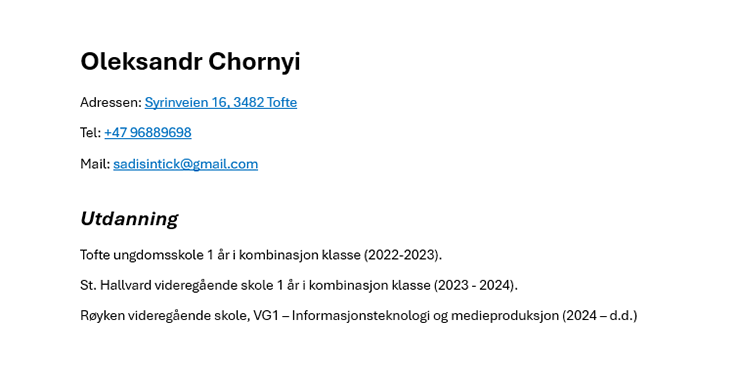
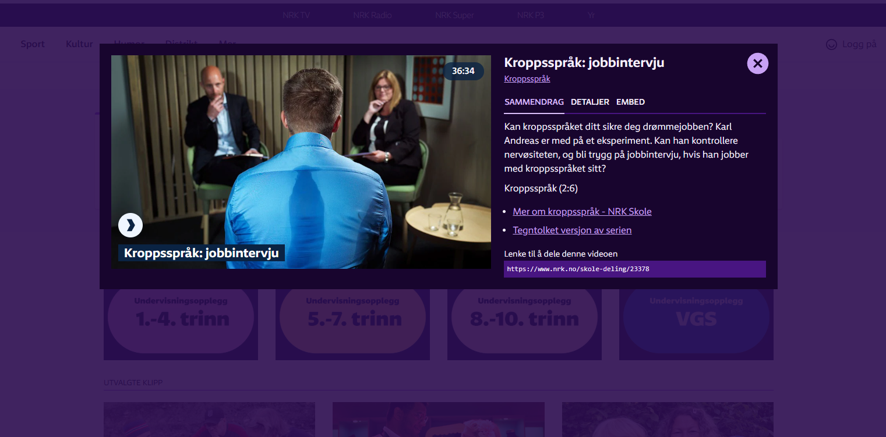
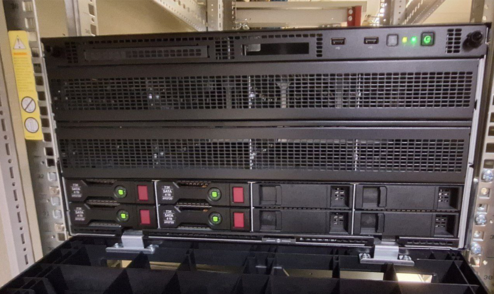
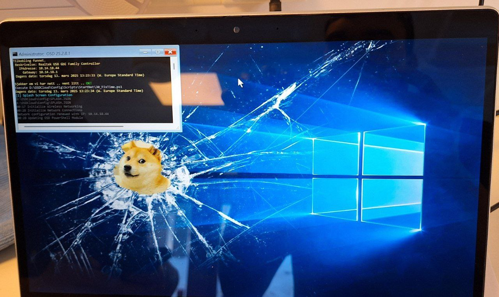
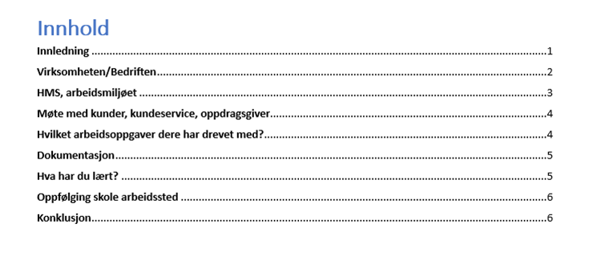
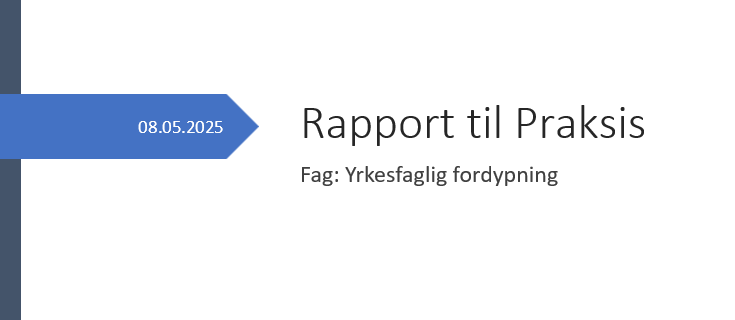

Introduksjon
Her på den nettside jeg skal vise og forklare hva har jeg lært i yrkesfaglig fordypning. Men før jeg skal gjøre det, vil jeg foklare litt hva er dette faget om. Yrkesfaglig fordypning er faget som handler om å gi elevene praktisk erfaring og fordypning i det yrket de ønsker å utdanne seg i. Det gir mulighet til å jobbe mer konkret med fag og oppgaver som er relevante for framtidig yrkesliv. Så etter dere kjent med faget kan vi komme til det jeg har lært i det faget.

Blogg
I de første ukene hele klassen startet å skrive bloggen, og fra starte av året og helt til slutten av Mars vi skrevet bloggen. Så jeg vil si at jeg har lært veldige mye om selv faget, hvordan skrive bloggen, hva skriver vanligvis man i bloggen, blogg content og en av de viktigste tingene, det er norske språket. Fordi det er ingenting som kunne forbedre min språk bedre enn å skrive blogg. Så jeg er veldige takknemlig til Henrik for denne oppgaven, fordi han bidro til min kunnskap om språket.


CV og søknad
I uke 39 jeg har lært om hvordan skrive CV og Søknad, hva skal man skrive der og hvor viktige kunne bli små detaljer og formal språket. Så jeg synes det var veldige nyttige for meg å lære.

Intervju
I uke 44 jeg har lært om hvordan man må oppføre seg på intervju, hvor stor rolle spiller kropp språk, hvordan du ser ut, hvor mye stresser du, hvordan du snakker og hva du sier. Merke: selv jeg har ikke bildet av mitt intervju, har jeg brukt bildet av en video fra en av de YFF timene. Link til video


Praksis
I uke 10, 11 og 12 helle klassen hadde praksis. Så jeg vil si at jeg har lært veldige mye gjennom praksis. Tingene jeg har lært: retanke PC, reinstallere/avinstallere/installere driver, litt forbredring av kunnskapene i nettet og hub-nett system, rapportering system FRID og IT tjenester som å hjelpe med printer, tid og dato, word dokument osv. Så jeg tenker at det var veldige kult og veldgie nyttige å lære om alt det.


Skriving av rapport
Fra uke 13 og opp til uke 19 jeg har lært om hvordan skrive rapport til jobben. Det var mye jeg skulle skrive om som: virksomhet/bedriften, HMS-arbeidsmiljøet, kundeserive, oppgaver jeg drivet med, dokumentasjon, det jeg har lært og oppføling skole arbeidssted. Så jeg synes at det var vanskelige oppgave men jeg forsatt lært meg mye om hvor strukturert må bli dokumentasjon, hvordan skrive arbeidsdokumentasjon og hvor formalt du må bli mens du skriver dokumentasjon.
Felles prosjekt
Det finnes også et felles prosjekt som jeg har startet i programmering og yrkesfaglig fordypning. Den handler om PC kalkulator der du kan skrive inn summen i dollars, velge kategori for din PC og trykke "Show results". Etter du trykket på "Show results" du skal få et liste med PCer som kan passe for deg. Tillegg jeg vil si at du kan også beskrive din drømme PC å bestile den på den nettside men opp til nå din forespørsel blir sendt i mellomrommet. Så prosjektet var interessant og veldige kult synes jeg. Link på prosjekt, link på gitHub
Konklusjon
Så det var alt jeg har lært gjennom dette året i Yrkesfaglig fordypning, og jeg synes at det var veldige nyttige og kult kunnskaper, som var ganske godt presentert. Så jeg er veldige fornøyd med faget og kunnskaper som jeg har lært gjennom faget. Tusen takk for alt det til Henrik Movik og Serdar Durmus